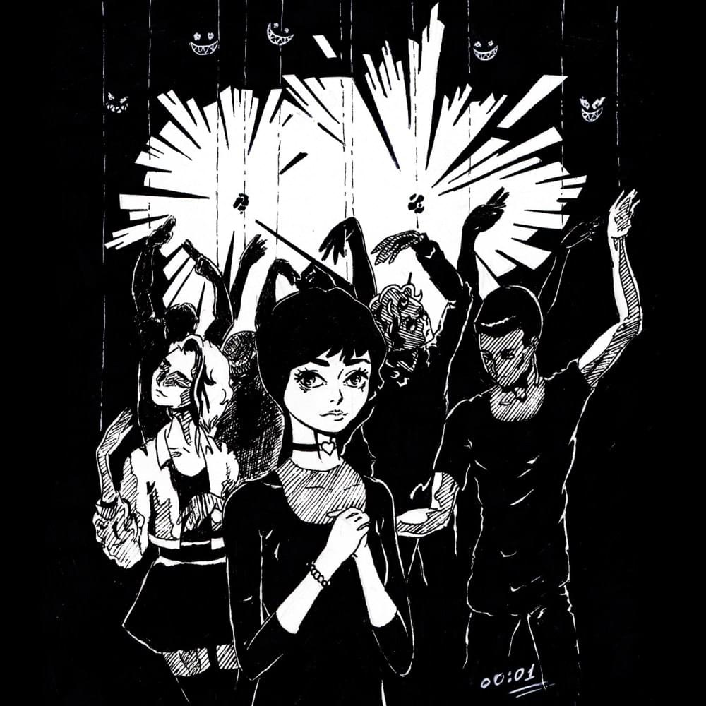

Pyrokinesis
как поэт

Пирокинезис является одним из лучших текстовиков россии. Его текста всегда наполнены глубоким смыслом, отсылками и секретами. Не смотря на жанр в сервисах, сам Пира не причисляет себя к рэперам или рокерами. Он считает, что эти жанры давно должны были размыть границы.
"Рамки жанров стираются и такие термины, как “рэпер” или “рокер” должны были пропасть уже давно. “Рэперы” вот песенки свои поют на прямую бочку, и это воспринимается нормально, а формальные панки рэпуют под гитарные рифы и ничего, люди тащатся. Лично я себя рэпером не считаю. Вообще, мало кто себя так называет сейчас. Я ведь им по сути и не являюсь — это должен быть человек с определенным бэкграундом и стилистикой. У меня этого нет, как и у 90 процентов людей в этом жанре. Только Мастер ШEFF себя рэпером сейчас считает, наверное.
У меня личная неприязнь к слову “артист”. В нем ничего такого нет, но меня оно просто раздражает. С детства отложилось, что артист — это такой чувак с несмешными шутками из “Кривого зеркала”. Вот там говорят: “А сейчас на сцену выходит наш народный артист”, а ты такой: “Б*****, п*****ц”."
Каждый текст исполнителя наполнен смыслом. Например в песне "Не время для драконов" автор сравнивает обычные вещи с фэнтези. Абстрактный герой идёт убивать абстрактного дракона, но встретив его, вогнал мечь в камень, начав выпивать с драконом, ведь давно уже не времи, ни для рыцарей, ни для драконов.
"Как быть в такой темноте
Королевства мертвы и принцессы давно не те
Подземелья пусты, разрушены замки
Последний горит монастырь"
"Большая отсылка к треку ‘"Ничего святого"
"Мы все пусты
Не виноват ни дом, ни этот город
Просто в нас самих давно уж нету ничего святого"
И к треку "Симулякр"
"Новый мир со старыми текстурами
Игра застряла на непроходимом уровне
Смерть автора
Старый подряд, новый порядок
Добро пожаловать в симулякр!"